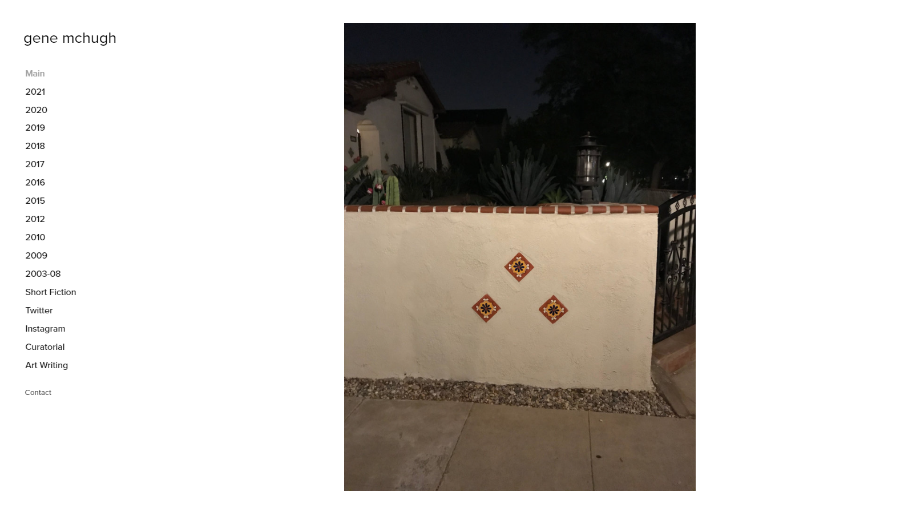

What even is Post Internet? If you remember, post-internet art means the current trend in art and critiques the concern with the impact of the internet on art and culture. The term originally came from Marisa Olson back in 2006, she also phrased it as "art after the internet" to contrast what stands outside the digital world. Another artist named Olia Lialina was concerned with the creative language that would correspond with the internet. An author named Gene McHugh wrote further on this topic, in his book "Post Internet: Notes on the internet and art" from the book understanding he made a blog throughout the years where it is a combination of writings and images. For gene, he kept filling this folder going for a year. However, post-internet art isn't just a beautiful critique. He explains that post-internet art is the shape of a criticism blog. In this theme, gene worked through the blog performativity of internet art.
Gene McHugh blog page.